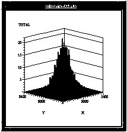

Figure 16. Two-Dimensional Histogram
When selected from the Main Window or the NTuple Window, Histo-Scope will display a two-dimensional histogram plot. A two dimensional histogram is a plot of two variables, where each axis is divided into a number of bins and has its own range and bin size.
Figure 17. Interacting with 2D Histograms
Initially, the entire range (excluding overflows) of the histogram is displayed. You can change the size of the plot by changing the size of its window (by dragging on the window frame). You can change the scale of the plot by using the mouse to drag a part of an axis (just outside of the plot) toward one direction or another. Use a point near the upper half of the axis to change the maximum axis value. Use an axis point near the lower half of the axis to change the minimum axis value. This will zoom in or out, depending on the direction you drag that axis point.
Once you have scaled a plot, it is possible to grab a point inside the plot (but still near the axis) and pan the plot, moving it around inside the axes.
The orientation of the histogram can be changed by grabbing a part of the display (away from an axis) with the select (left) mouse button and moving the display in space to a different orientation.
Using the Ctrl key along with the mouse button for the above scaling, panning, and rotation functions will provide a continuous display of the 2d histogram. Without using the Ctrl key, only the axes and labels are displayed while you are adjusting the plot. (This is the default mode to accomodate slow displays).
You can also use the right mouse button to pop-up a menu which allows the following functions:
(Accelerator Key):Error data stored for the histogram can be displayed as error bars by selecting Error Data from the plot settings menu. If selected from the Ntuple Window, slider variables can be selected for adjusting the plot with animation sliders. See the section Adjusting Plot Settings in this guide for detailed explanations of plot settings.Help
Show Statistics (Ctrl T)
Show Sliders[6] (Ctrl L)
Show Rebin Slider (Ctrl B)
Other Views
Axis Settings... (Ctrl A)
Zoom In (Ctrl Z)
Zoom Out (Shift Ctrl Z)
Reset View (Ctrl R)
Error Data[7]
Gaussian Errors
Show Backplanes
Label at Bin Edges
Automatic Update
Update (Ctrl U)
Grow Only (Ctrl O)
Print... (Ctrl P)
Generate PostScript... (Ctrl F)
Change Window Title (Ctrl E)
Close (Ctrl W)
Another view of the two-dimensional histogram as a two-dimensional cell plot can be requested by selecting Other Views from the Plot Settings menu. Please see page 45 for further information on the cell plot.